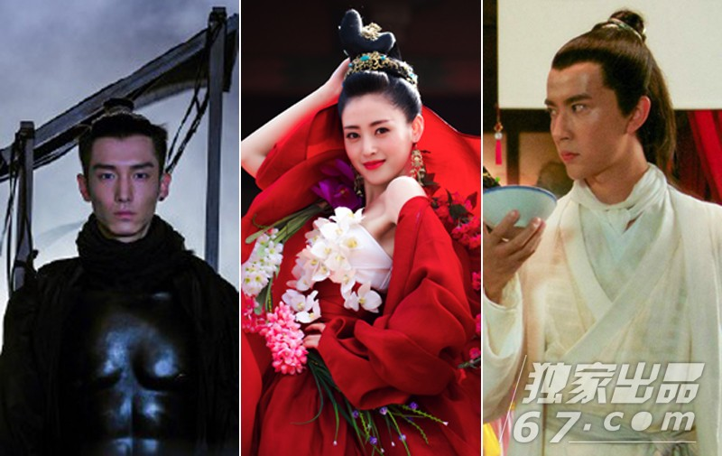
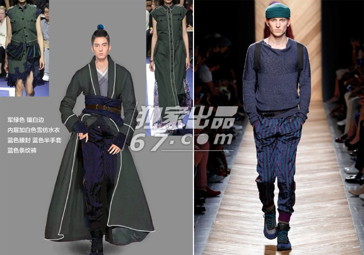
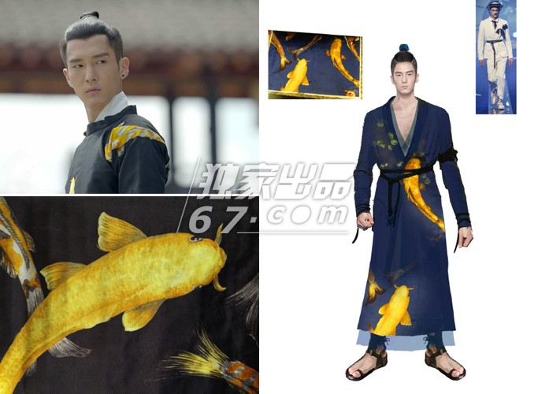
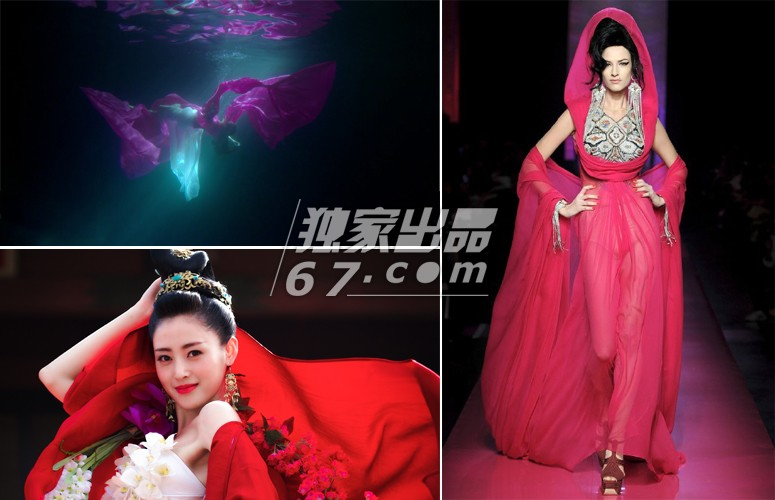
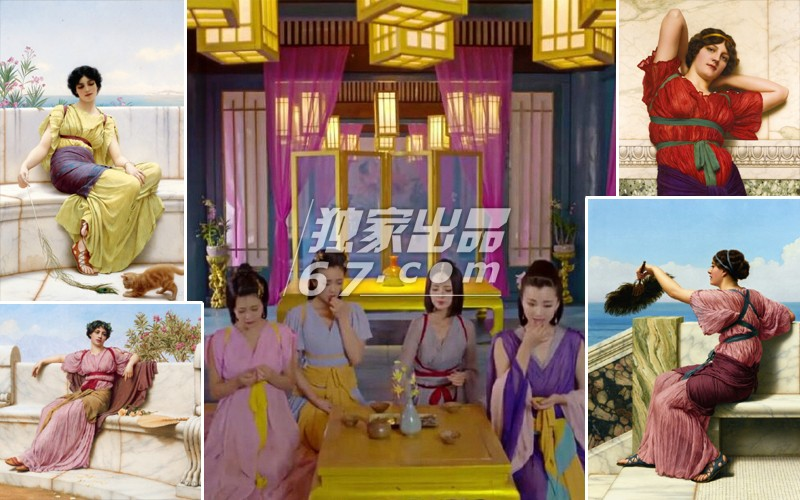
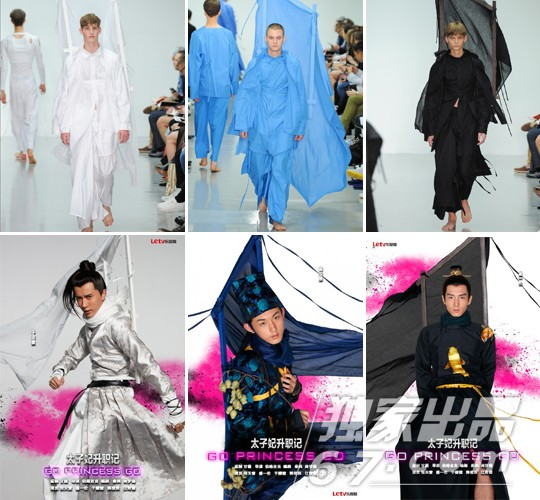

| 《太子妃》天雷滚滚竟有毒 雷人造型来头逆天 |
|  |
| 最近有一部网络穿越剧可是刷爆各大网站，没错，它就是剧组没钱一切凑合演员不红却个个貌美如花的《太子妃升职记》。今天小编要扒的就是那看起来超级雷，料子像影楼材质的服装造型！千万不要小看这些造型，小编去导演的微博逛了一圈都快吓尿了！！！竟然每个造型都有出处，来头还不小呢！ |
|
| 开始一直不懂太子齐晟的这款盔甲，之后才知道这竟然是从秀场上运用过来的！！！ |
|  |
太子齐晟的这款造型则参考了女装sacai，裤子参考了bottega veneta。 |
|  |
小编一直想不通，皇族不都是龙吗，怎么到了《太子妃》就成了锦鲤了？是要跳龙门吗？齐晟的这身衣服也是出自秀场，不过他身上穿的则是窗帘店的窗帘改造的！ 人家导演说啦！“锦鲤一直被视为财富地位的象征，是大吉的象征。不论是在我国的八卦玄学中，还是在西方的塔罗奥义里，东方都代表成功和发展。而西方总是代表金钱和社会地位，又由于西方是落日之方缺乏乏“金”质，故在西方位摆放黄金锦鲤是最旺运招财的作法》”依小编拙见，这不就是锦鲤许愿嘛。 |
|  |
| 太子妃张�M�M水下的裙子参考了法国鬼才设计师Jean Paul Gaultier的作品，不过这剧中的画面也太唯美了吧，感觉都能当大片用了！不愧导演是摄影师，不过造型再怎么漂亮，在水下也是看不出来的！ |
|  |
| 据说这宫中四个嗑瓜子的妃子服装设计参考了英国维多利亚时代的新古典画家约翰・威廉・格维得的油画作品，因太子妃升职记开机时间是浙江象山影视基地最炎热的季节，考虑到演员的身体状况，所以在设计时以飘逸凉爽为前提。不过小编眼拙，只看出了“暴露”俩字。。。 |
|  |
| 在此之前小编一直不知道带兵打仗为何要背着帐篷，原来是战旗啊！！！真的是旗在人在，旗倒人亡啊！！！ |